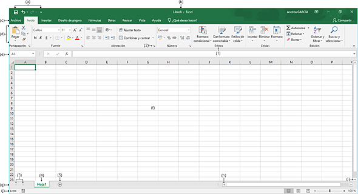
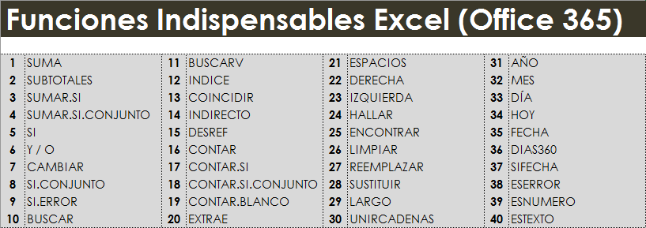
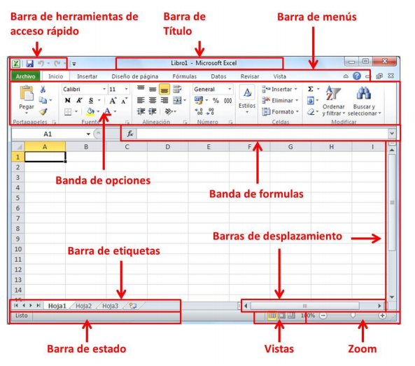
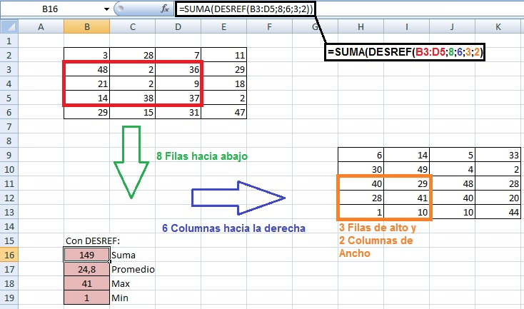
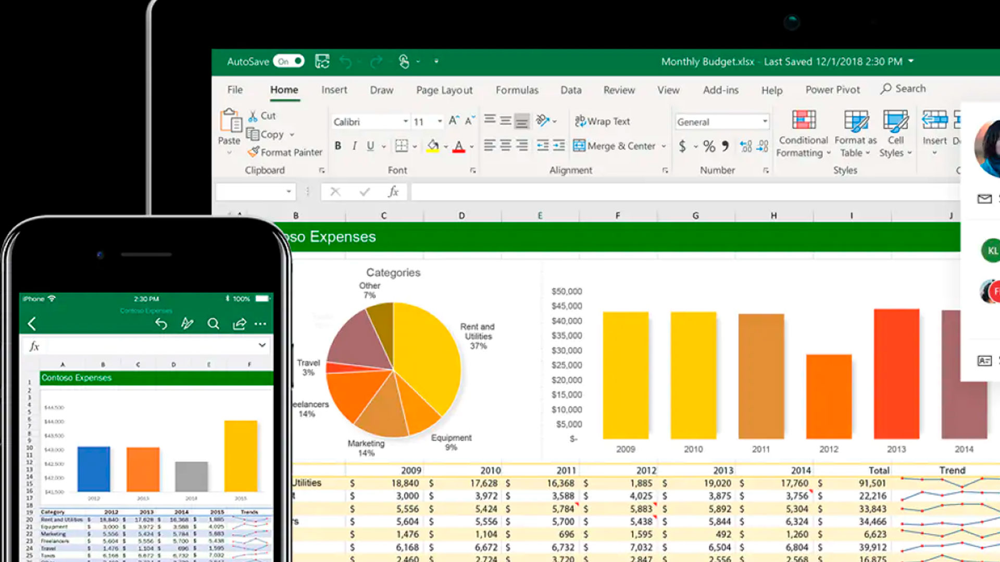

Excel se distingue de todos los programas ofimáticos porque nos permite trabajar con datos numéricos. Con los números que almacenamos en Excel podremos realizar cálculos aritméticos básicos y también podremos aplicar funciones matemáticas de mayor complejidad, o utilizar funciones estadísticas.La característica principal de Excel, tal como lo conocemos hoy en día, es que la pantalla principal muestra una matriz de dos dimensiones, es decir, está formada por columnas y filas. :
Algunas de las funciones que tiene excel son el Pegado especial, Insertar varias filas, Relleno Rápido, Índice y coincidir, Suma Rápida, CTRL Z / CTRL Y Eliminar Duplicados,Inmovilizar paneles, contiene la función indice y la función promedio, tambien nos ayuda a encontrar y hacer operaciones muy facilmente cuando se tienen muchos datos.
Algunos componentes son:Barra de títulos, Se encuentra en la parte de arroba del documento, aquí se muestra el nombre del programa y el nombre de tu hoja de cálculo,Barras de menús,Cinta de opciones,Títulos de las columnas,Títulos de las filas,Cuadro de nombres,Barra de fórmulas,Celdas de Excel.
-Orden y organización de datos: Con Excel podrás organizar los datos, tanto numéricos como de texto, en hojas o libros de cálculo, Graficar datos con mucha facilidad, Análisis y almacenamiento de datos, Facilitación del trabajo,Resaltar las presentaciones de datos e informe.
Podemos concluir que excel es una herramienta muy importante que nos ayuda a agilizar los calculos de los datos que se nos proporcionen, ya que esta aplicación cuenta con herramientas muy utiles para llevar a cabo varias operaciones matematicas.
